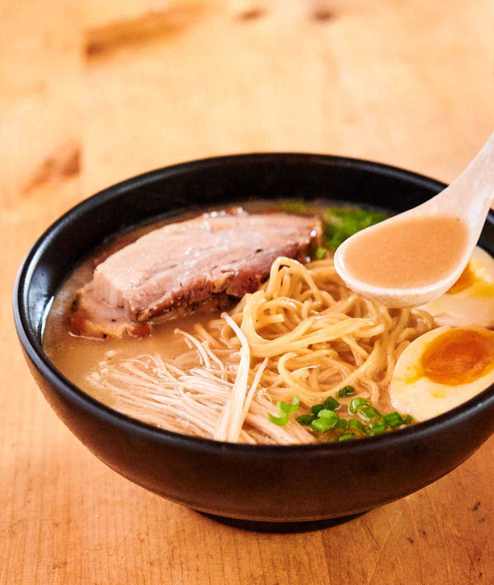

Tonkotsu Ramen

Description
This mouthwatering staple of
Japanese cuisine takes hours
to make but well-worth the wait.
In this recipe, we will find out just how simple and easy it is to whip up if you are willing to put in the time. Trust me,
you won't regret it one bit!
Ingredients
Tonkotsu ramen
- 8 cups tonkotsu pork broth
- 12oz good quality dried ramen noodles
- 4 large or extra large eggs
- 2-3oz enoki or other mushrooms
- thinly sliced green onions
Chashu pork belly
- 2lb pork belly
- 1/4 cup soy sauce
- 1/2 cup sake
- 1/2 cup mirin
- 1/4 cup sugar
- 2-3 cloves garlic
- 2 green onions
Miso tare
- 1/2 cup shiro miso
- 1/4 cup sake
- 1/4 cup mirin
- 1-2 tsp kosher salt
Steps
Chashu pork belly
- Combine the soy, sake, mirin, sugar, garlic and green onions in a ziploc bag large enough to hold the pork belly. Stick a straw in the bag and seal the ziploc bag up against it (so the straw is the only opening). Suck as much of the air out as you can and seal.
- Sous vide the pork for 10-11 hours at 170F.
- Remove pork from the ziploc bag. Discard the bag and marinate.
- Let the chashu pork belly cool completely.
- Slice across the chashu pork (so you get bacon like slices) into 8-12 slices about 1/8 to 3/16 inches thick. Reserve. You won't need all the pork for 4 servings.
Miso tare
- Combine all ingredients in a small sauce pan and simmer at the lowest setting for about 5 minutes.
Medium boiled eggs
- Bring enough water to cover the eggs to a boil. If you have a way to prick the eggshell do it. Boil large eggs for 6 minutes 30 seconds. If using extra large eggs boil them for 7 minutes 30 seconds. You may have to adjust your times slightly depending on the exact size of your eggs but this should get you pretty close.
- Submerge the eggs in cold or ice water to chill. This stops the egg yolks from continuing to set up. Peel. Cut in half right before you serve your tonkotsu ramen.
Assembling the ramen
- Boil the ramen noodles in plenty of water as directed by the packaging. If there’s no translation on the packaging usually its 4 minutes. You don’t need to salt the water.
- Cook the mushrooms along side the noodles – you just want them softened.
- Gently fry the chashu pork in a non-stick skillet until lightly browned.
- Place 1/4 of whichever tare you are using in the bottom of four bowls.
- Ladle in about 1/2 cup of the tonkotsu broth into each of the bowls and stir to mix.
- Add the noodles. Pour in another 1 1/2 cups of the tonkotsu broth per bowl.
- Top with the egg, mushrooms, pork and green onions.